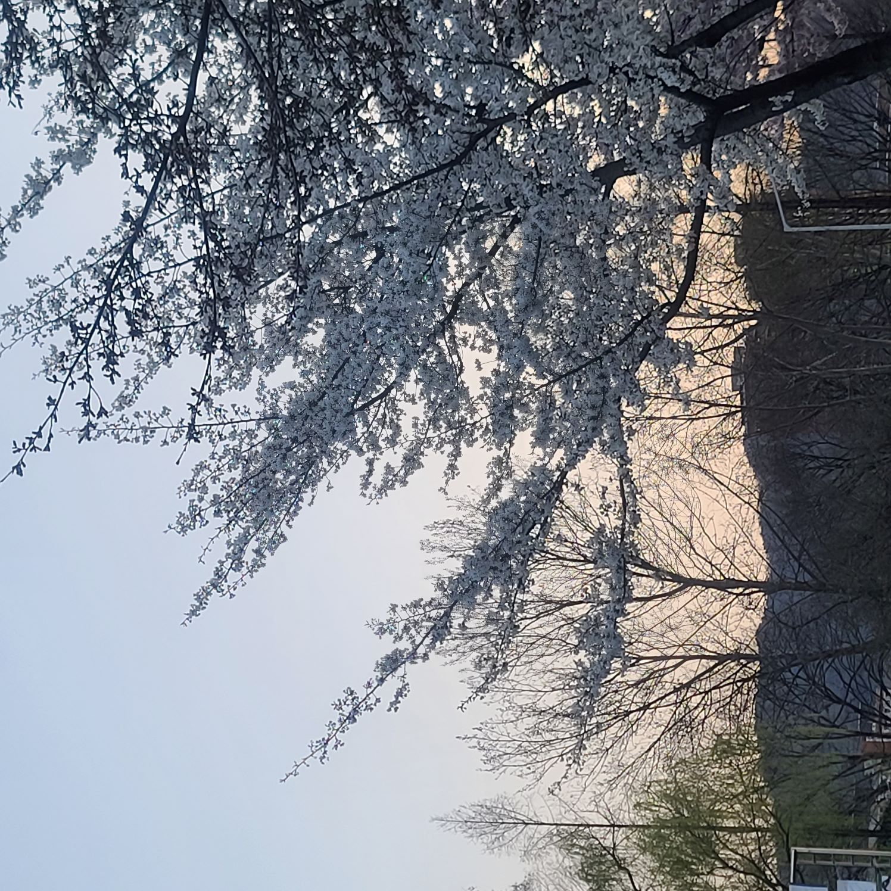
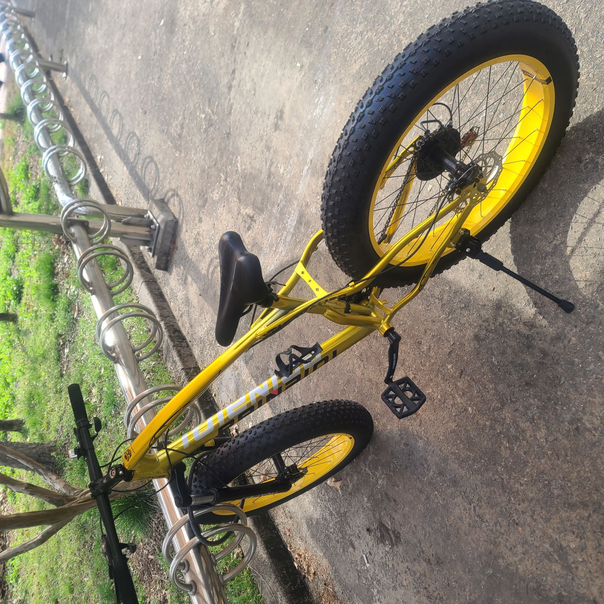
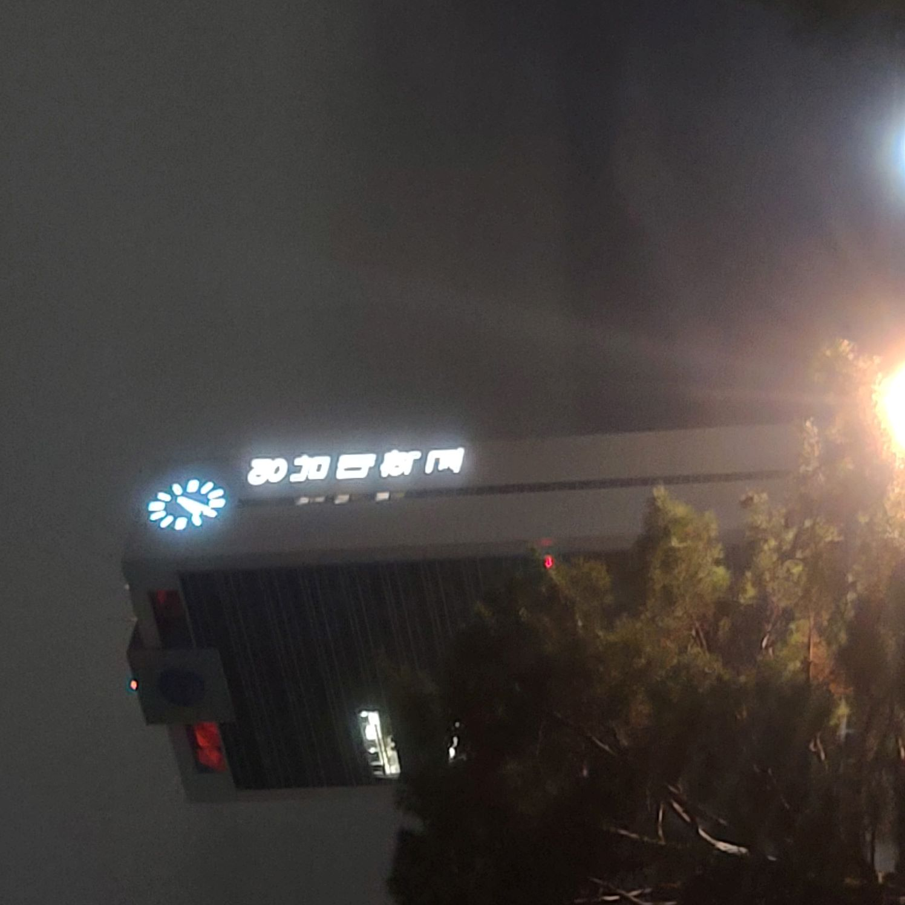
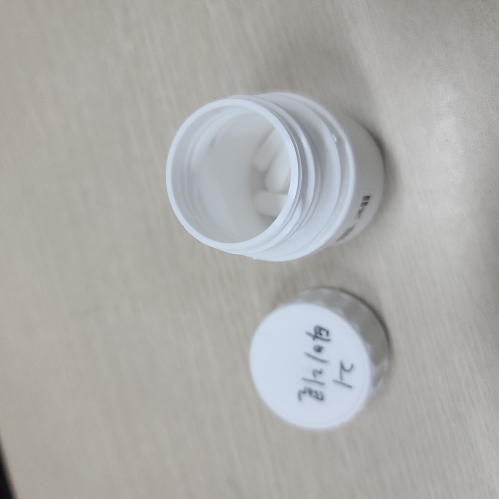
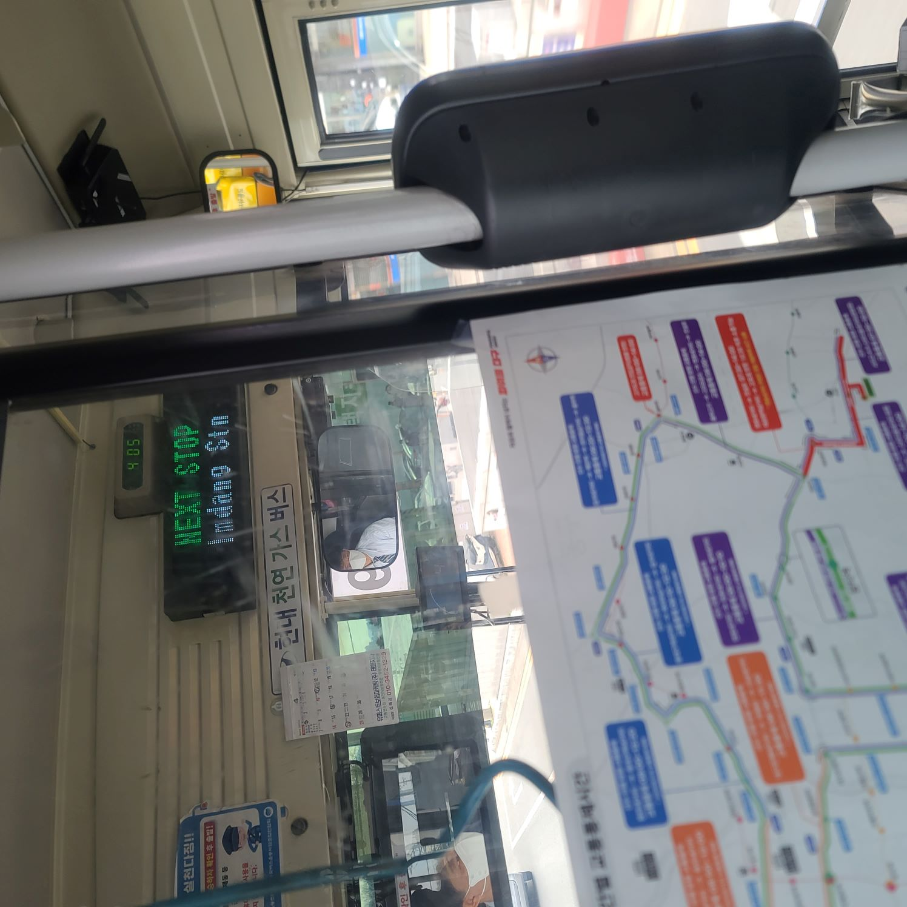
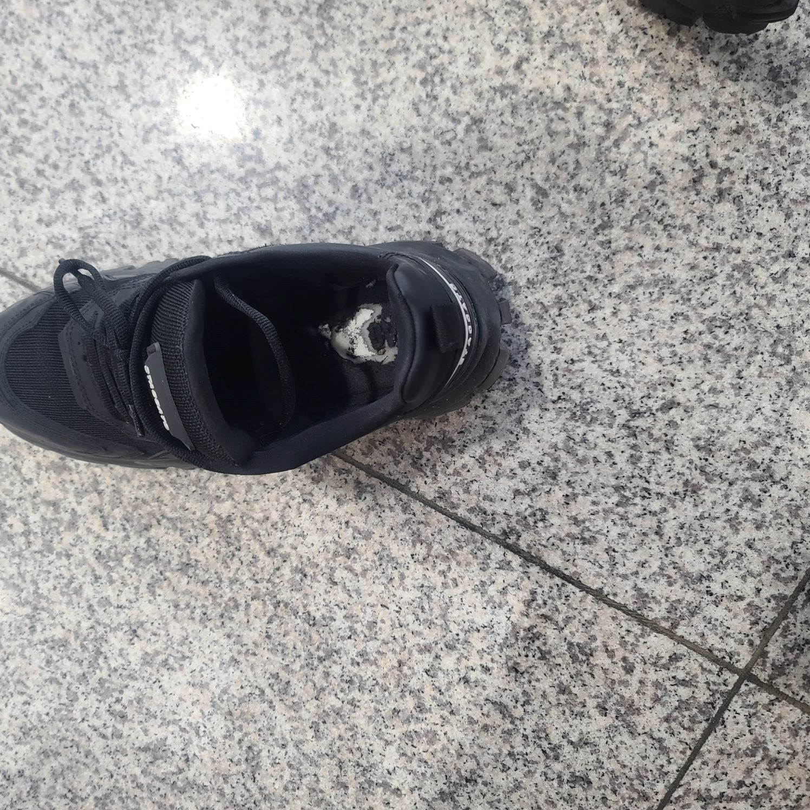
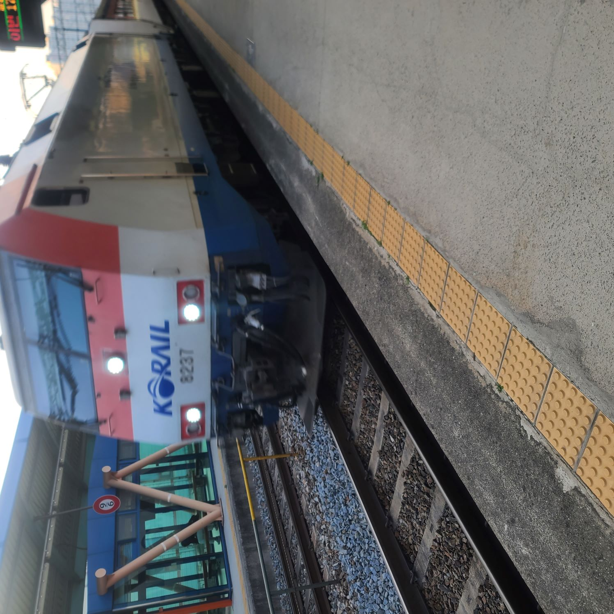
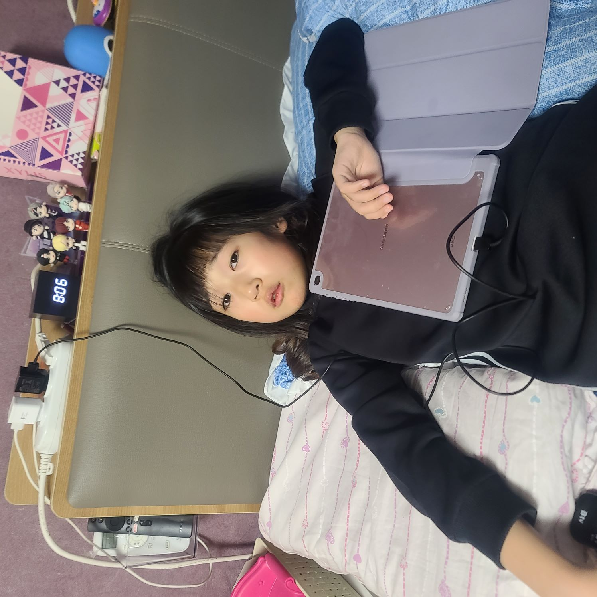
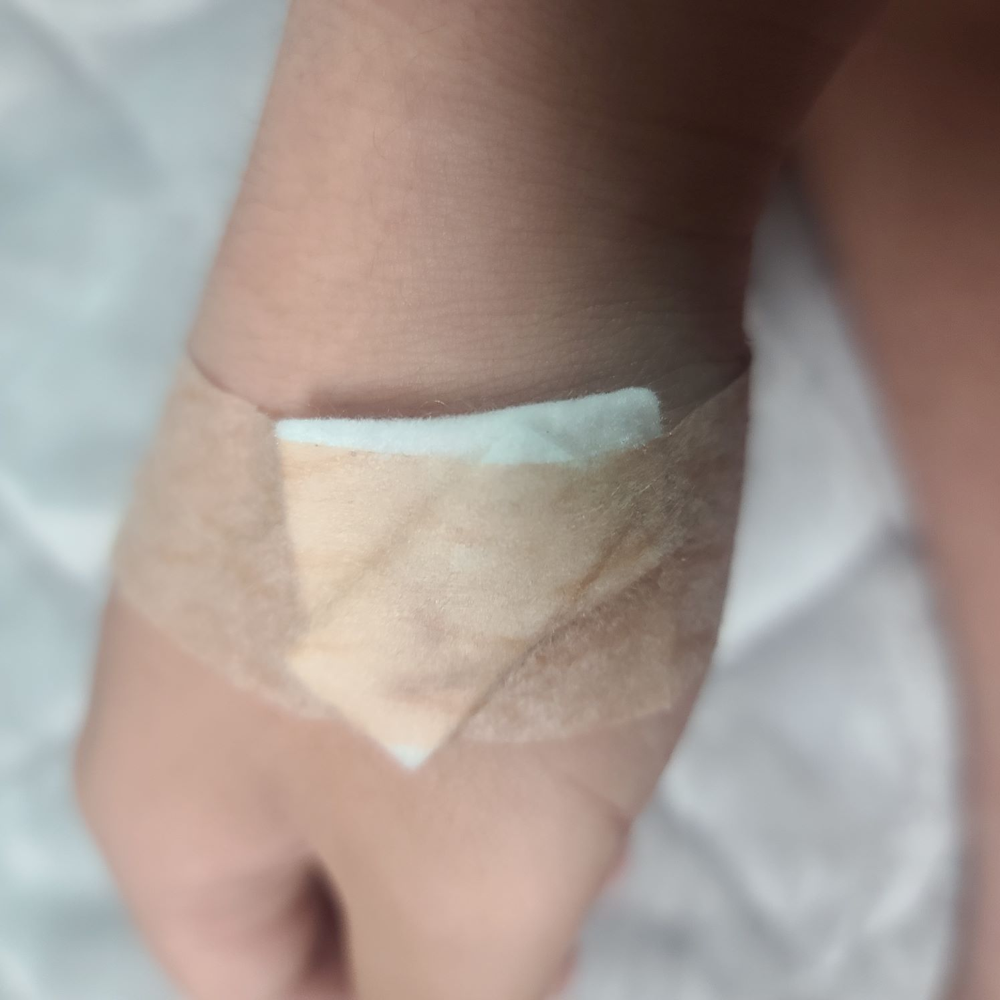

환절기의 악마

봄은 새로운 시작을 상징하는 계절로 많은 사람들이 생각하고 있다. 그리고 그 시기에 피는 꽃들도 대부분 긍정적인 이미지로 봄을 생각하고 있지만, 어떤 사람들에게 봄과 꽃은 그 어떤 계절보다 끔찍하다 그 이유는 바로 환절기 꽃가루 알레르기, 겪어본 사람들만 알 수 있는 그 최악의 느낌은 정말이지, 눈물과 충혈로 인한 가려움, 비염과 콧물 그리고 끝나지 않는 재채기의 연속은 정말 사람을 미치게 만든다는 그것이 심지어 며칠도 아니다 한 달 내내 지속된다. 1주 2주도 아닌 한 달이다 정말 예쁜 꽃들이다. 풍경이고 하지만 내눈에는 그저 사라졌으면 좋겠다.
자전거는...

자전거는 짧은 거리를 이동할 때 참 좋다. 특히 영남대학교는 땅이 평평해서 타고 다니기도 좋고 그래서 통학할 때 쓸 자전거에 눈길이 가게 됐고 결국 구매하게 됐다 최대한 반동이 적은 거로 쓰다 보니 적응되어서 체력 소모도 적어졌다 그러다 갑자기 안장이 90도로 꺾이는 사고도 사고도 있었지만, 그럭저럭 해결 하기도 했다 그러던 어느날 운전면허도 있는 김에 전동 킥보드나 한번 타볼까 하고 전동 킥보드를 타보게 됐고, 기어코 자동의 쾌적함과 편리함을 깨닫게 된 후에는 내발로 굴려서 움직여야만 하는 자전거는 이전과 같은 시선으로 바라볼 수 없게 됬다.
비오는 날의 킥보드

지금에 와서야 생각하는 거지만 이것이 앞으로 일어날 고통이 시작되는 만악의 근원이었다. 하필이면 아침 강의가 있었던 날 비가 오는 바람에 평소라면 비어있을 킥보드 들이 대량으로 남아있다. 그래서 눈길이 평소보다 더 갔고 그것 때문에 안일했던 나는 몸살기가 살짝 있었음에도 비를 맞으며 기어이 6번이나 킥보드를 타게 됐다(하필이면 그날 강의도 몰려 있었다.) 그 덕분에 나는 고열과 인후통과 두통과 기침과 콧물과 가래와 코막힘과 극심한 몸살을 얻게 되었다 지금도 킥보드만 보면 그 기억이 떠오른다.이러한 안일한 짓을 한 과거의 나를 욕하면서 말이다.
한밤중의 영남대

오후 늦게까지 진행되는 강의를 마치고 터벅터벅 돌아가는 길에 유난히 빛나서 매번 내 시선을 훔쳐 가던 영남대학교라는 글씨가 크게 쓰여 있는 건물이 하나 있다 매번 저긴 무슨 건물이지라고 생각해서 한번 들러볼지 라는 마음이 생기기도 하지만 아주 미묘하게 내 강의 동선과 맞지 않아 항상 바라보고만 지나치는데 그런 와중에도 건물은 가장 높고 글자도 선명하게 보여서 번 시선만 뺏기고 끝끝난다. 학기 초에 아직 길이 익숙하지 않아서 어색했을 때 잠깐 본 건물 1층에 도서관? 같은 게 있었던 거 같은데... 진짜 시간 나면 들러야지 라고 생각만 하고있다.
만병통치약

세상엔 진짜 만병통치약은 없어도 그에 유사한 것이 있다면 난 타이레놀이라고 생각한다. 내가 편두통으로 고생하던 시절부터 지금까지 나의 만병통치약으로 활약하신 알약이다. 한동안 안 쓰다가 갑자기 내게 두통, 인후통, 고열과 몸살이 찾아올 줄은 몰랐다 그때 부모님이 혹시 몰라서 챙겨주신 타이레놀이 눈에 들어왔고 간신히 그날 수업을 무난하게 마칠 수 있었다. 그 후로 약 효과가 있을 때는 비교적 멀쩡했다가 약 효과 없을 때는 반쯤 시체로 지내는걸 반복하였고 나중에는 결국 빠른 회복을 위해 치료 받으러 가게 됐다.
낯선 버스

이 평범해 보이는 버스 정확히는 이 평범해 보이는 버스들이 내 눈길을 끈 이미지가 된 건 내가 살던 곳과는 살짝 다른 버스 체계 때문이다. 이것 덕분에 두 시간 정도 헤매고 기차를 놓칠뻔한 걸 생각하면 눈길이 안 갈 수 없다. 일단 이 지역 버스는 각각 다른 번호의 버스가 같은 지점을 도는데 그걸 몰라서 다음 같은 번호의 버스가 올 때까지 몇십분을 기다렸다... 물론 그 이후로는 정보를 알아내서 이런 일은 없지만 아직도 10초 남기고 아슬아슬하게 기차를 못 탈뻔한 걸 생각하면 아찔해서 종종 지나가는 버스들이 어디로 가는지 확인하곤 한다.
구멍난 신발

이 이미지가 보일수박에 없던 된 이유는... 언제부턴가 왠지 미묘하게 걸음걸이가 불편해졌는데 그냥 기분 탓인가 보다 하고 넘기고 지내다가 마침내 한 달 동안 내 걸음걸이를 미묘하게 불편하게 만든 한 원인을 찾아냈다. 그것은 바로 구멍 난 깔창인데... 참 곤란하게 된 것이 현재 기숙사 생활 중이라 대처할만한 신발이나 깔창이 없어서 구멍 난 걸 알아도 알아도 울며 겨자 먹기로 계속해서 써야 한다는 것이었고 이것이 아픈데도 기차를 타고 친가까지 갔다 온 계기가 되었다 뭐 덕분에 겸사겸사해 처방도 하고 생필품도 챙겨왔으니 그나마 불행중에 다행이라고 생각한다.
익숙해진 기차길

적응되지 않아서 낯설었던 기차도 한 7번째쯤 되니까 익숙해졌다. 하지만 매번 기차가 들어오는 순간의 그 귀가 떨어질 것 같은 굉음은 아직 적응되지 않아서 눈길을 안 주고 싶어도 안 줄 수가 없었다. 그래서 이 이미지 또한 이번 주에 내 눈길을 끈 이미지 중 하나로 선정하게 되었다 내부 좌석은 또 의외로 편해서 뒷자리에 좌석도 오후 10시 기차 정도면 사람도 많이 없어서 웬만큼 운이 없지 않은 이상 이상 좌석을 눕혀서 타는 것도 가능해서 쾌적하다 하지만 큰 단점이 있는데 무려 왕복으로 만원하고도 5천 원 정도의 교통비가 나간다는 것이다.
우리네 금쪽이

이번에 눈길을 끈 이미지로 정한 것은 나와 10살 차이 나는 우리 4 남매 중 막내 늦둥이이다. 막내라서 그런지 늦둥이라서 그런지 말 안 듣기로는 둘 째가라면 서러워서 너무 마음대로 하는데 막내인데 어떡하나 나이 차이도 10살이나 나는데 그냥 귀엽게 봐야지... 그래도 오랜만에 볼 때면 그런 생각보단 귀엽다는 생각이 더 많이 든다. 그러다 보니 식습관도 이상해졌는데 매번 감자튀김 스팸 김밥 라면 사이클로 돌아가는 살찌기 딱 좋은 식습관인데도 불구하고 살은 이상하게 안 찐다. 어린애라서 어린애라서 그런지 체질인지... 고치긴 해야 할 텐데 걱정이다.
결국 맞아버린...

며칠 동안 버티다가 결국 며칠 내내 각종 질병(인후통, 두통, 고열, 기침, 콧물, 가래)으로 고생하다가 도저히 안 돼서 결국 주사를 맞았다. 총 8시간 동안 천천히 맞아서 그런지 효과가 잘 돌아서 맞기 이전보다 상태가 쾌적해졌다. 감기약도 먹으면서 이제는 나름대로 전보다 상태가 호전되어서 가만히만 있어도 열이 오르고 아주 약간의 흔들림만 있어도 머리가 깨질 것 같은 두통이 지속되는 상태는 면할 수 있었다.다 그러고 나니 문득 링거 맞고 주사를 빼고 붙인 솜과 반창고가 눈에 보였다.